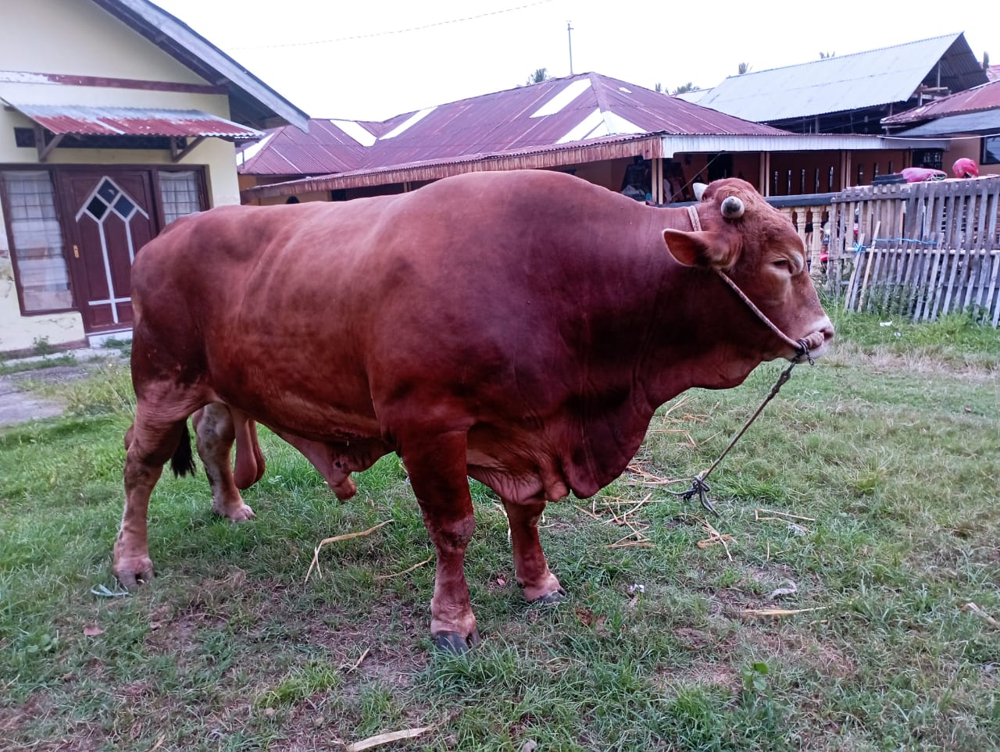

Ada yang berbeda dari Iduladha tahun ini terkait hewan kurban. Tidak semua jenis sapi bisa digunakan, terutama yang berasal dari Australia.
Direktur Eksekutif Gabungan Pelaku Usaha Peternak Sapi Indonesia (Gapuspindo) Djoni Liano mengungkapkan,
sapi impor dari Australia berada di bawah pengawasan ketat terkait kesejahteraan hewan (animal welfare).
"Kalau sapi bakalan impor, itu kalau untuk qurban dia harus dipotongnya di RPH yang sudah lolos audit terhadap animal welfare. Jadi tidak diperkenankan dipotong di depan masjid atau tempat-tempat yang bukan RPH," jelas Djoni kepada CNBC Indonesia, dikutip Jumat (6/6/2025).
Aturan tersebut wajib dipatuhi oleh negara-negara pengimpor, termasuk Indonesia, sebagai bentuk komitmen terhadap standar yang telah ditetapkan oleh pihak Australia.
"Australia kan sangat concern terhadap animal welfare itu. Jadi kita juga mengikuti. Kalau sapi yang kita adakan dari Australia, kita harus mengikuti aturan animal welfare yang sifatnya universal itu," ujarnya.
Meski kebutuhan sapi kurban saat Idul Adha meningkat, bisa naik 30-40%, permintaan atas sapi bakalan impor untuk kurban masih relatif kecil. Salah satu alasannya adalah karena proses pemotongan yang lebih kompleks.
"Karena kita punya aturan, kalau dewan pengurus masjid atau DKM (Dewan Kemakmuran Masjid) mau beli sapi dari feedlot (tempat penggemukan hewan ternak), maka harus dipotong di RPH. Di RPH itu DKM yang datang dan melakukan proses pemotongan sesuai akidah agama, dan juga sesuai aturan animal welfare," terang Djoni.
Meski belum mendominasi, Djoni menyebut tren penggunaan sapi dari feedlot untuk kurban sudah mulai meningkat dalam beberapa tahun terakhir. Beberapa DKM bahkan mulai tertarik dengan sistem ini karena dianggap lebih praktis.
Oleh karena itu, penyembelihan sapi-sapi ini tidak boleh dilakukan sembarangan, melainkan hanya di Rumah Potong Hewan (RPH) yang sudah memenuhi standar tertentu.
.jpg)